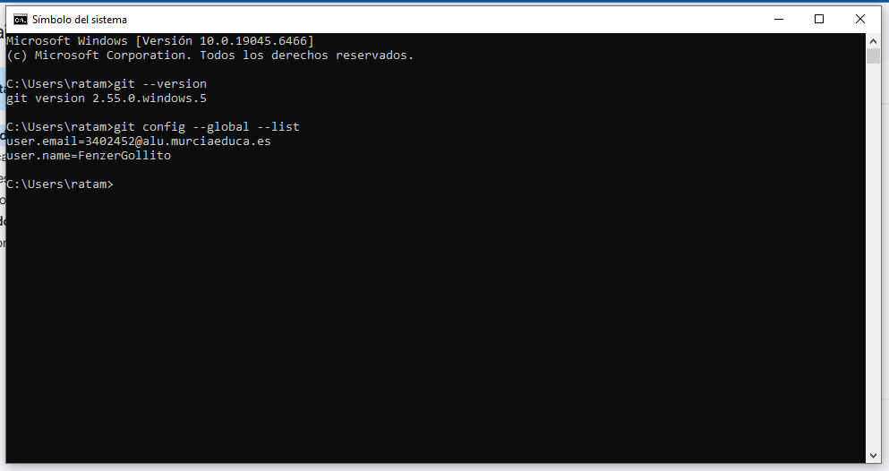
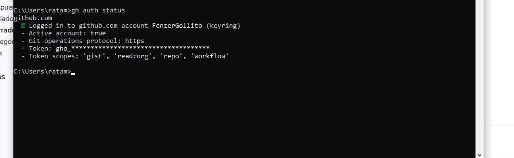
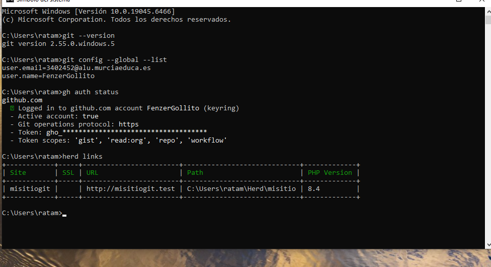
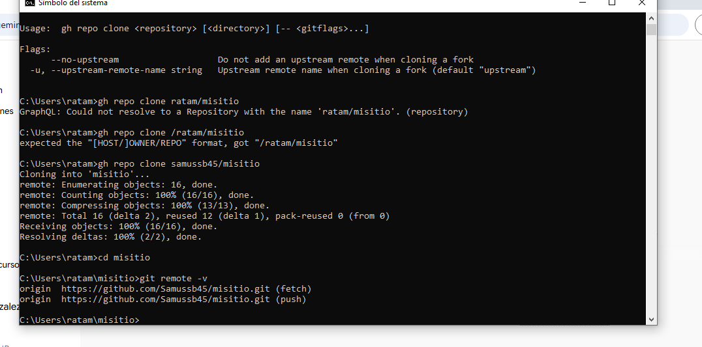

Documentacion del Proyecto2627
1. Instalación y Configuración de Git
Se ha instalado Git en el sistema y se ha configurado correctamente para el control de versiones.

2. Autenticación con GitHub CLI
Se ha instalado y utilizado la herramienta de línea de comandos de GitHub para vincular y gestionar el repositorio desde la terminal.

3. Instalación de Herd
Se ha desplegado Laravel Herd en el equipo como entorno de desarrollo local para servir el proyecto de forma rápida.

4. Despliegue de "misitio" en Local con HTTPS
El proyecto local llamado "misitio" está funcionando correctamente y se le ha asegurado la conexión mediante un certificado SSL (HTTPS).
